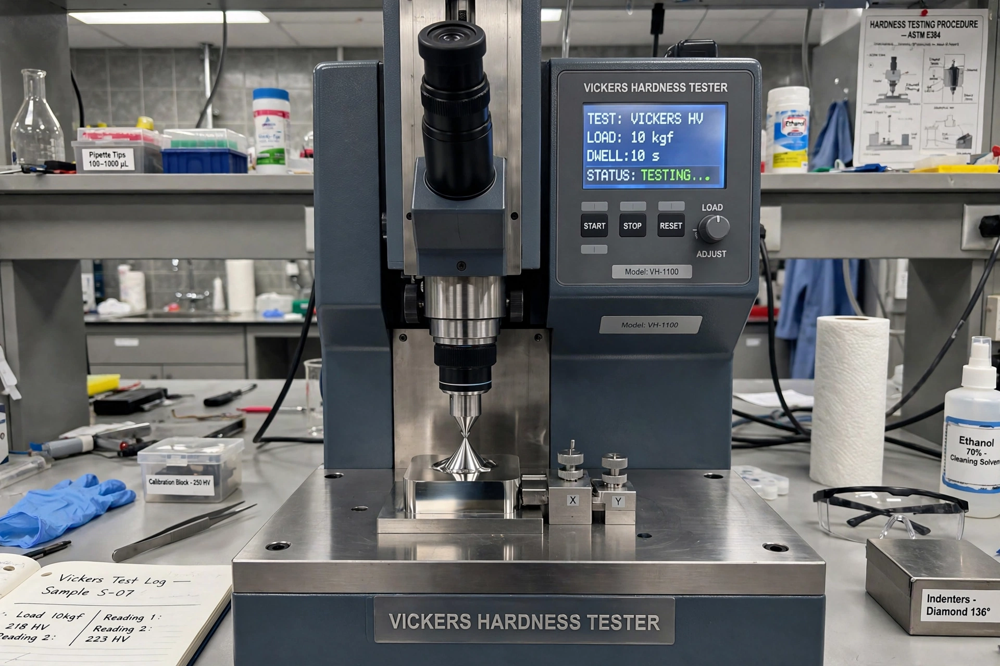

In materials science, hardness (from hard) is a measure of the resistance to localised plastic deformation, such as an indentation (over an area) or a scratch (linear), induced mechanically either by pressing or abrasion. In general, different materials differ in their hardness; for example, hard metals such as titanium and beryllium are harder than soft metals such as sodium and metallic tin, or wood and common plastics.
There are three main types of hardness measurements: scratch, indentation, and rebound. Within each of these classes of measurement there are individual measurement scales.
Scratch hardness is the measure of how resistant a sample is to abrasion or permanent plastic deformation due to friction from a sharp object. The most common scale for this qualitative test is the Mohs scale, used in mineralogy, which ranks materials from talc (1) to diamond (10).
Indentation hardness measures the resistance of a sample to material deformation due to a constant compression load from a sharp object. Common tests include the Vickers, Brinell, Rockwell and Knoop tests. These tests form a permanent indentation whose size is measured and converted to a hardness number.
Rebound hardness, also known as dynamic hardness, measures the height of the "bounce" of a diamond-tipped hammer dropped from a fixed height onto a material. The Leeb rebound hardness test is one common method.
Materials can be made harder by several mechanisms, including work hardening (strain hardening), solid-solution strengthening, precipitation hardening, and grain-boundary strengthening, in which smaller crystal grains impede the motion of dislocations through the material.
Hardness correlates roughly with tensile strength for many steels, but it is not a fundamental material property: it depends on the test method and conditions. Hardness is distinct from toughness, which describes resistance to fracture, and from stiffness, described by Young's modulus.